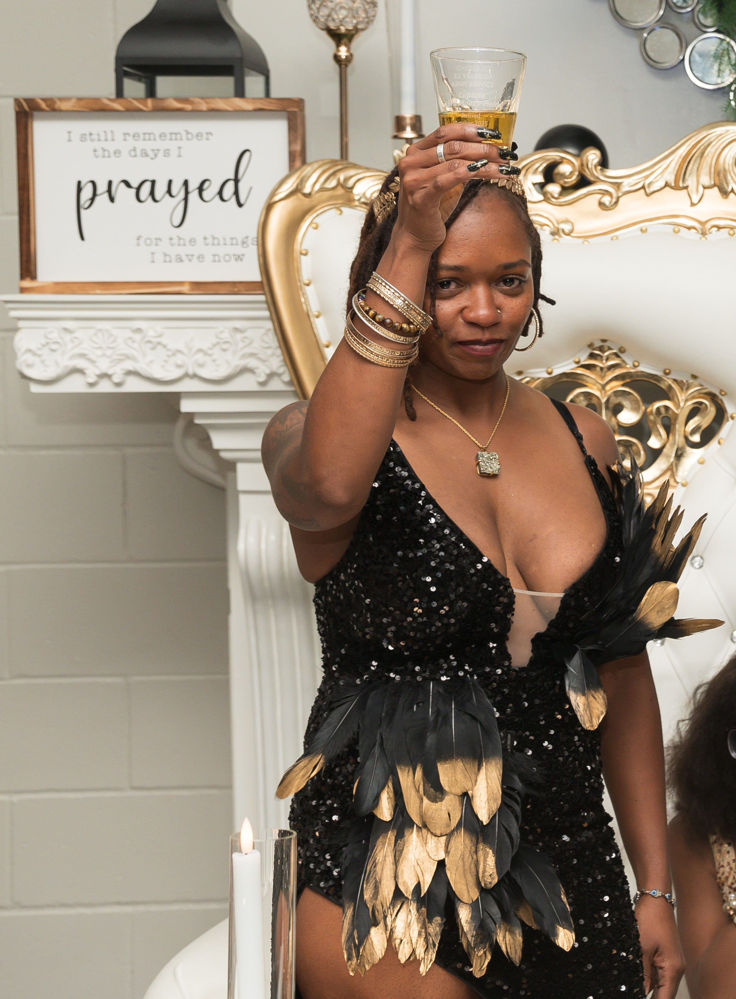

Latest Writing
About April

Less than 1% of U.S. military officers are Black women.
April is one of them.
April Fields is a retired U.S. Army Officer, author, and intuitive mentor who knows what it means to build something from nothing.
Raised by a single teen mother, she enlisted in the Army and spent 22 years navigating both sides of the ranks — earning her commission through Columbus State University and rising to lead soldiers, projects, and missions across multiple levels of command. She holds a Master's degree in Management and Leadership and has briefed commanders, influenced decisions, and developed leaders at scale.
Today, through Fields of Freedom, she channels two decades of service into something deeply personal — helping others find their footing, own their story, and walk boldly into whatever comes next.
She is a mother of two daughters, a memoir writer, and living proof that where you start does not determine where you land.